Lou Mao
Restaurant · Aix centre-ville
Une cuisine méditerranéenne de saison, une carte courte qui change souvent, et une terrasse à l'ombre des platanes.
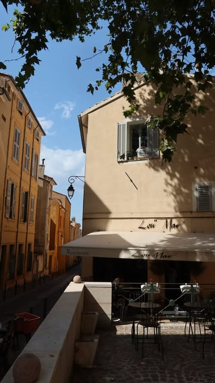
La maison
Un bistrot provençal, tout simplement
« Lou Mao », c'est un petit restaurant au cœur d'Aix, rue Emeric David, à deux pas de la place Miollis. Des murs bleu nuit, quelques tables en terrasse, et une cuisine qui suit le marché.
La carte est volontairement courte et se renouvelle environ toutes les trois semaines. On y cuisine des produits frais, avec l'accent du Sud : huile d'olive, herbes, poissons, légumes de saison… et quelques gourmandises qu'on aime partager.
À très vite chez nous
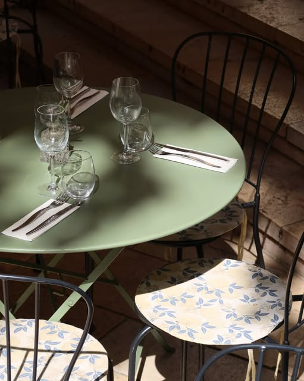
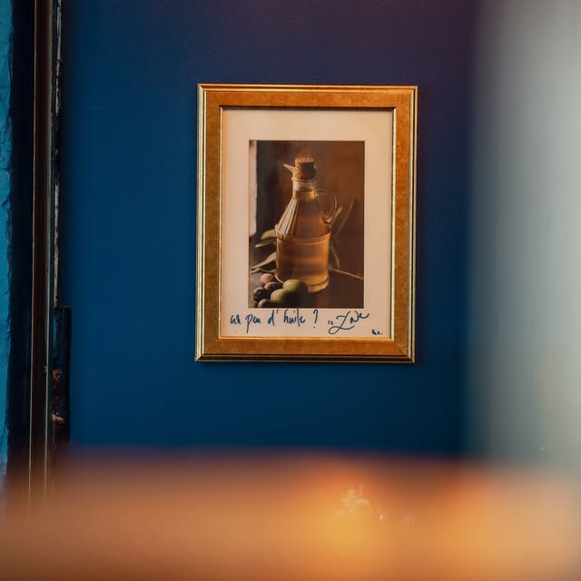
La carte
La carte du moment
Tout est cuisiné à la minute, à partir de produits frais. La carte se renouvelle régulièrement.
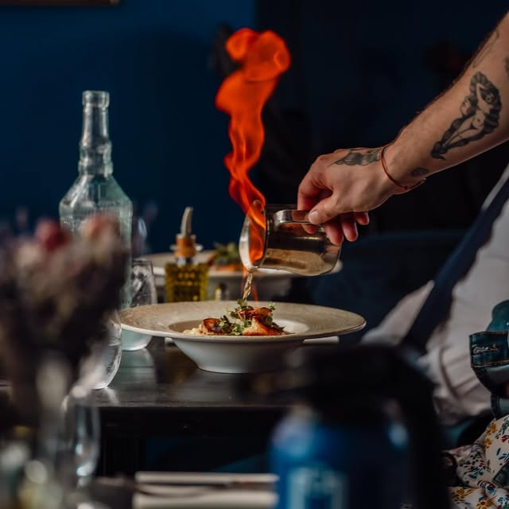
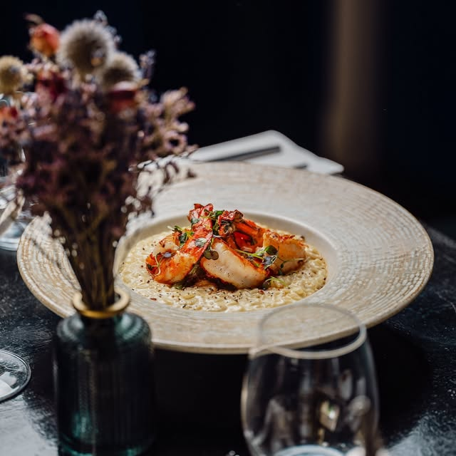
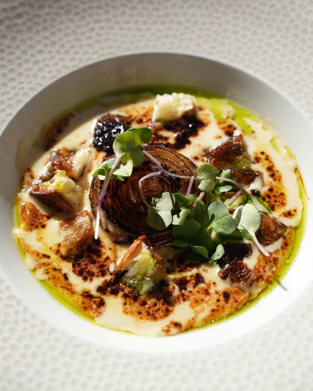
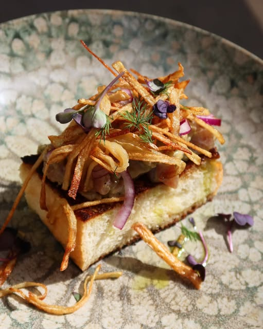
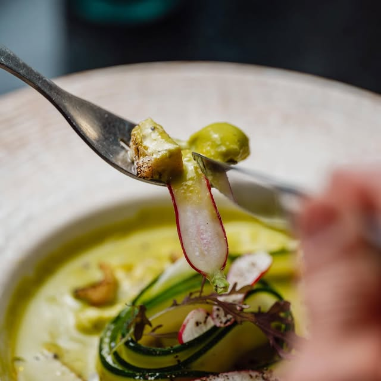
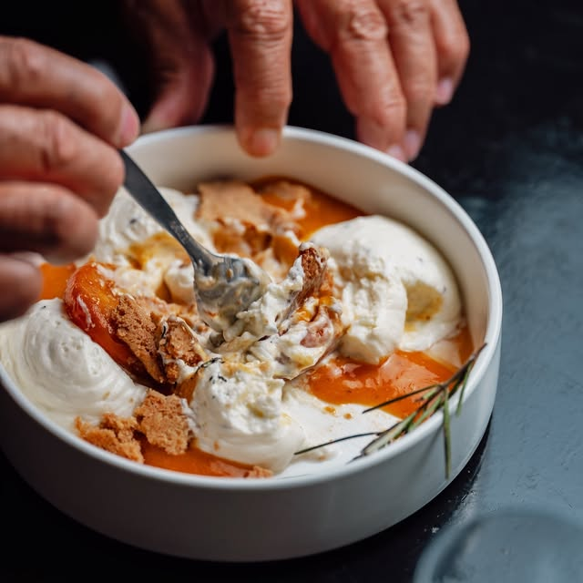
En cuisine
Flavien Panaiva
Chef français installé à Aix, Flavien signe une cuisine de saison, précise et généreuse. Des assiettes colorées, des cuissons justes, et toujours une touche de Méditerranée.
Pour suivre ses créations et les coulisses de la cuisine :
@flavien_panaiva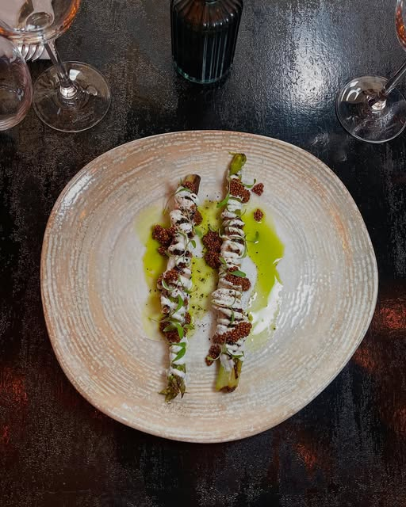
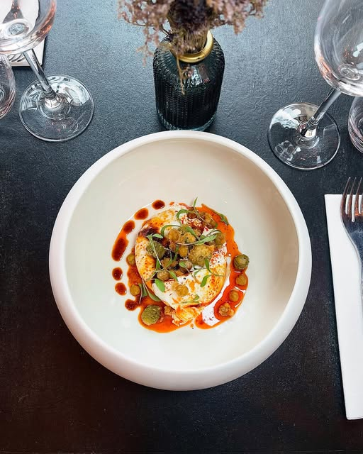
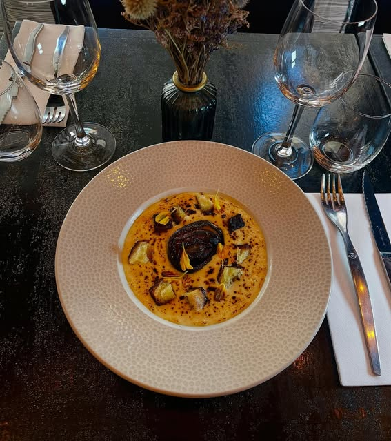
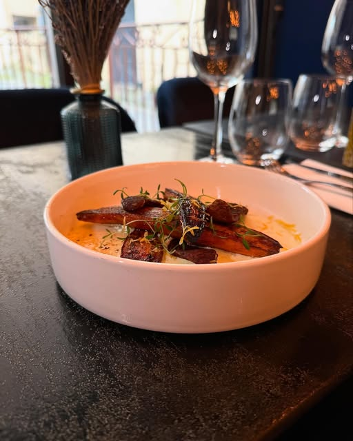
Ils en parlent
Avis clients
4,8TheFork · 132 avis
4,8Google · 203 avis
Une pépite aixoise !
Chez Lou Mao, on ne vient pas seulement déjeuner ou dîner, on découvre l'univers d'un jeune créateur passionné qui ose sortir des sentiers battus.
Tout est cuisiné à la minute à partir de produits frais. Chaque assiette raconte une histoire où les saveurs dialoguent avec des textures surprenantes.
Une adresse bistronomique remarquable. Chaque assiette, de l'entrée au dessert, révèle une cuisine subtile, maîtrisée et pleine de saveurs.
Le risotto et la pavlova sont aussi magnifiques que délicieux. Ça faisait longtemps que je ne m'étais pas autant régalée !
Un vrai régal. Les plats sont excellents. L'accueil et l'écoute sont au rendez-vous.
Petit restaurant très bien placé dans Aix-centre avec une terrasse calme. Cuisine bistronomique de région, recherchée et délicieuse.
Nous trouver
Infos pratiques
Horaires
Du mardi au samedi
12h00 – 16h00
18h30 – 01h00
Fermé le dimanche et le lundi